Vieux-Nice et le port
Ruelles étroites, façades ocre, cours Saleya et son marché, bars et restaurants jusque tard. Le port Lympia, juste derrière la colline du Château, attire ceux qui veulent la même animation avec un peu plus de calme.
Nice.immo · Le quotidien de la ville
Cinquième ville de France, Nice se vit à pied le long de la Promenade, dans les ruelles ocre du Vieux-Nice et sur les hauteurs de Cimiez. Ce que la ville offre au quotidien, quartier par quartier, avant d'y acheter ou d'y vendre.
Estimer un bien à Nice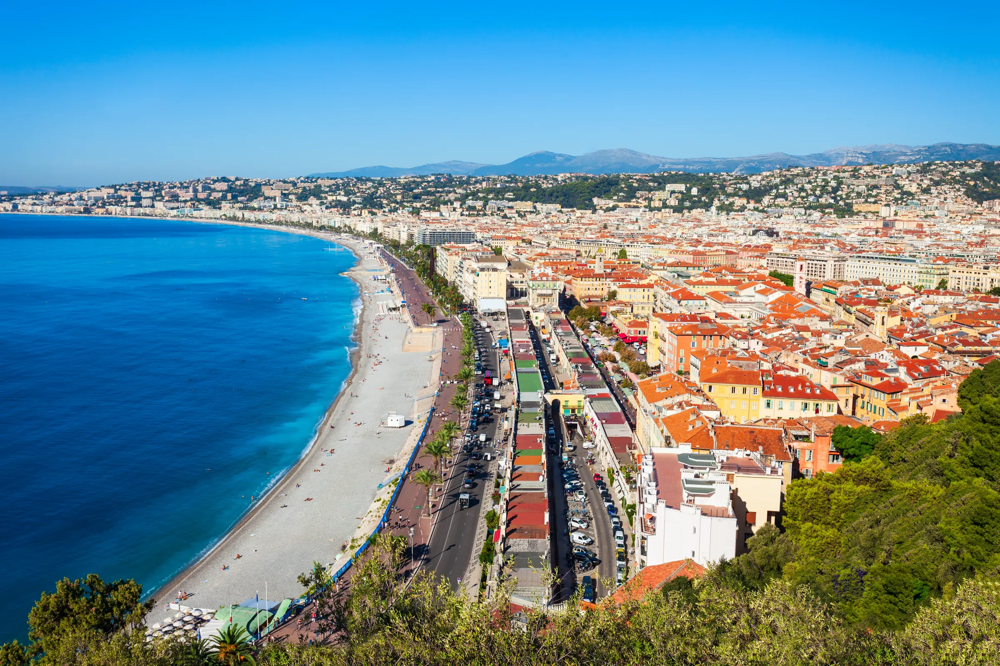
La ville en un regard
Avec près de 350 000 habitants, Nice est la plus grande ville de la Côte d'Azur et la cinquième de France. Elle tient pourtant dans un amphithéâtre de collines ouvert sur la mer, ce qui la rend lisible : la Promenade en bas, les quartiers en pente derrière, le port à l'est et l'aéroport à l'ouest.
Depuis 2021, la ville est inscrite au patrimoine mondial de l'UNESCO comme « capitale du tourisme de riviera ». Cette reconnaissance salue deux siècles d'urbanisme d'hiver : palais, villas, jardins et promenades conçus pour vivre dehors, que les Niçois utilisent aujourd'hui toute l'année.
On y parle encore le nissart dans les noms de rues et sur les étals du marché. Et la ville reste, à l'échelle des grandes villes françaises, une ville où l'on se déplace à pied, à vélo et en tramway.
Sources à confirmer : INSEE, population municipale ; UNESCO, liste du patrimoine mondial, 2021.
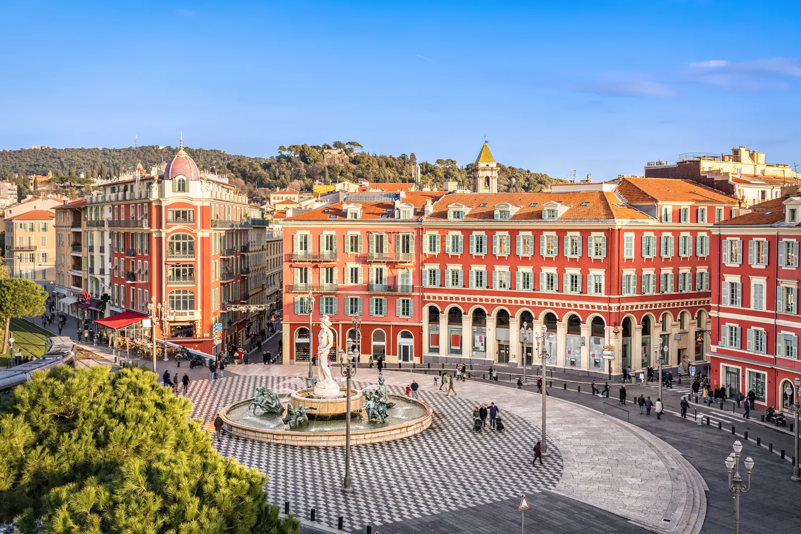
Où habiter
Nice n'a pas un seul visage. Le choix d'un quartier y est d'abord un choix de mode de vie : au bord de l'eau, dans l'animation du centre, sur une colline au calme ou près d'une ligne de tramway.
Ruelles étroites, façades ocre, cours Saleya et son marché, bars et restaurants jusque tard. Le port Lympia, juste derrière la colline du Château, attire ceux qui veulent la même animation avec un peu plus de calme.
Les immeubles bourgeois entre la rue de France et la mer, à deux pas des plages et des commerces. Le quartier le plus recherché de la ville, et celui où le mètre carré se paie le plus cher.
Anciens palaces reconvertis, villas dans les jardins, les arènes romaines et le monastère. Un quartier résidentiel, silencieux, prisé des familles, à dix minutes du centre en bus.
Le marché de la Libération, la gare du Sud et ses halles, des immeubles anciens habités à l'année. Le tramway a transformé ces quartiers en adresses recherchées pour vivre à Nice sans voiture.
Les collines qui encadrent la ville : vues sur la baie, maisons et résidences dans la verdure, air plus frais l'été. On y vit en voiture, pour la tranquillité et l'espace.
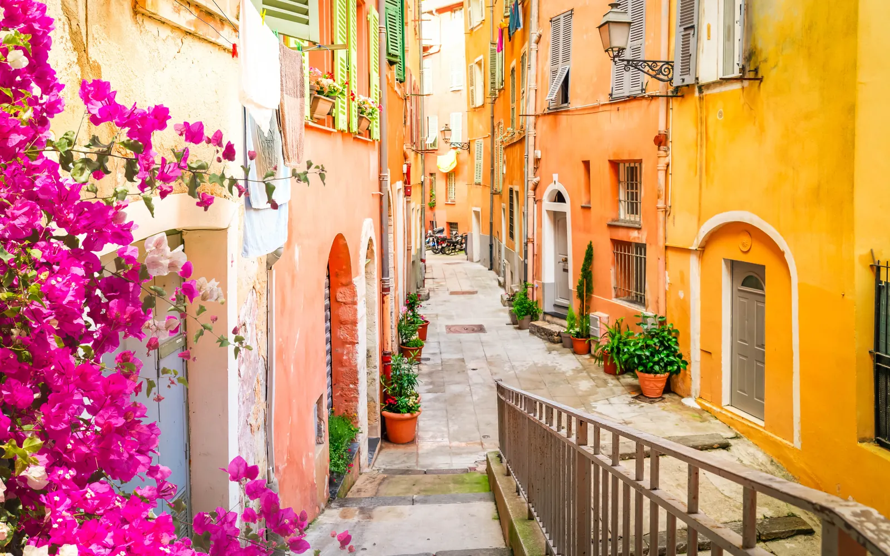
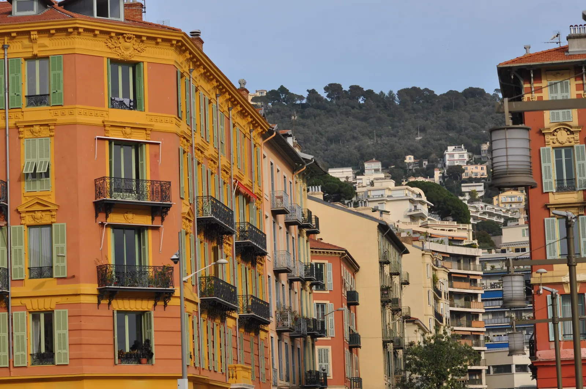
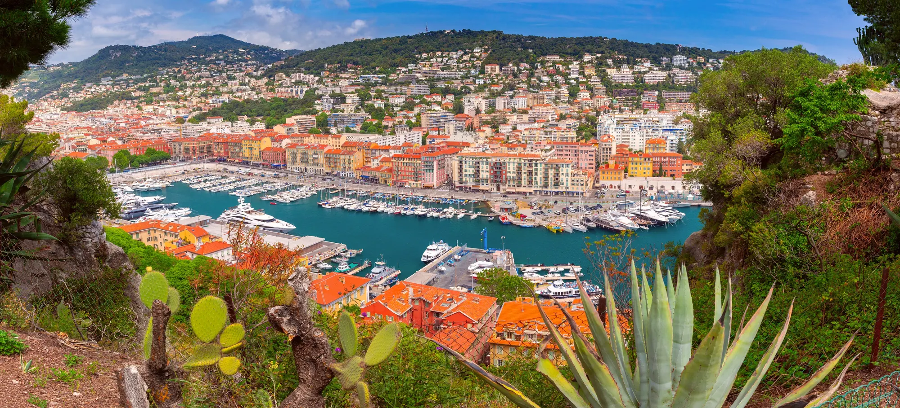
Le quotidien
La Promenade des Anglais court sur sept kilomètres le long de la baie. Les Niçois y marchent, y courent, y roulent et s'y assoient : les chaises bleues, face à la mer, sont devenues l'emblème de la ville. Les plages de galets se rejoignent à pied depuis presque tout le centre.
Le matin, le cours Saleya se transforme en marché aux fleurs, aux fruits et aux légumes. La cuisine niçoise se mange sur le pouce, socca, pissaladière, pan bagnat, ou à table, avec la salade niçoise et les petits farcis. La ville a même déposé un label, « Cuisine nissarde », pour protéger ses recettes.
Le climat fait le reste : des hivers doux qui permettent de déjeuner en terrasse en janvier, et des étés chauds que l'on tempère par la mer et les collines.
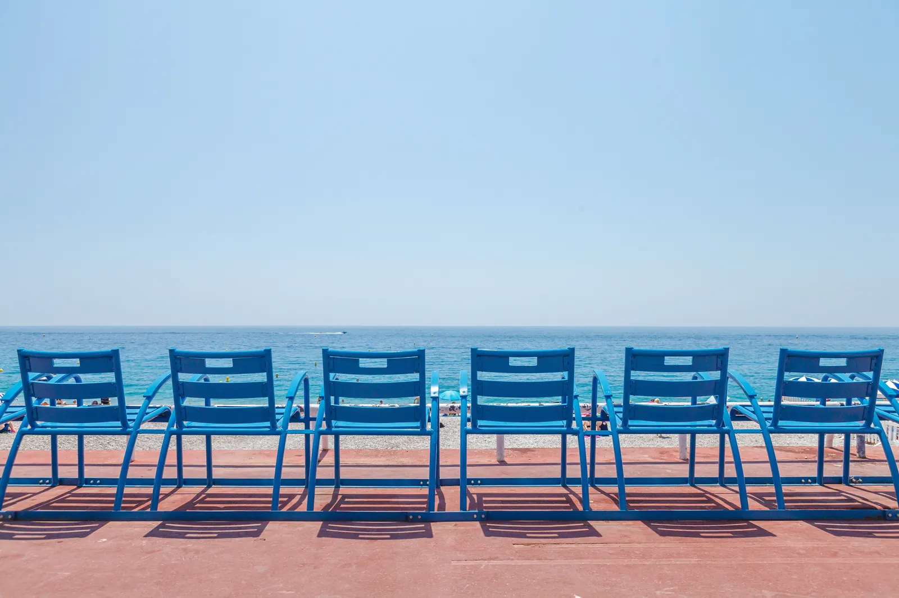
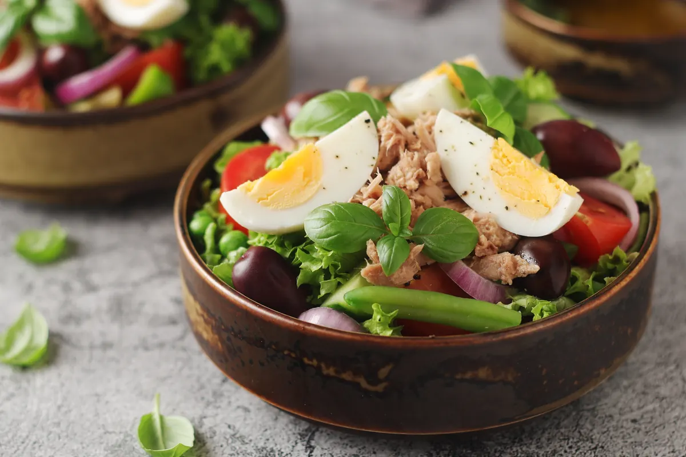
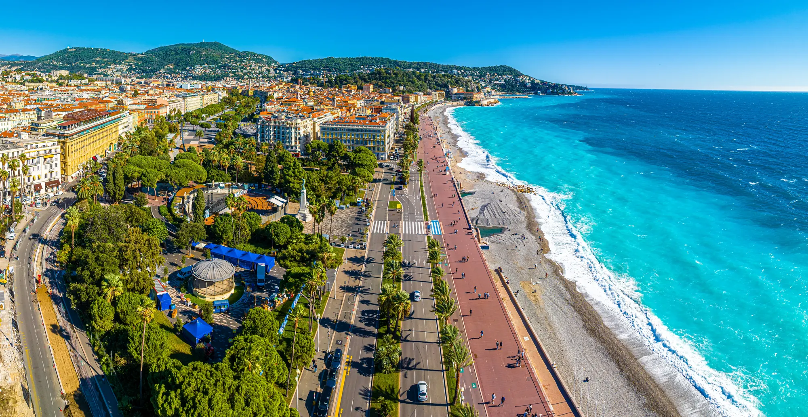
Patrimoine et culture
Nice a été bâtie pour être regardée. Les façades Belle Époque de la Promenade et du centre, les palais de Cimiez, les immeubles colorés du Vieux-Nice et du port composent un décor que l'on traverse chaque jour sans lassitude.
La ville compte une quinzaine de musées municipaux, parmi lesquels le musée Matisse et le musée Chagall à Cimiez, le MAMAC pour l'art moderne et contemporain, le musée Masséna sur la Promenade. L'Opéra, le Théâtre national et de nombreuses salles complètent la saison culturelle.
Chaque février, le Carnaval de Nice, l'un des plus grands du monde, occupe la place Masséna pendant deux semaines, avec ses corsos et ses batailles de fleurs.
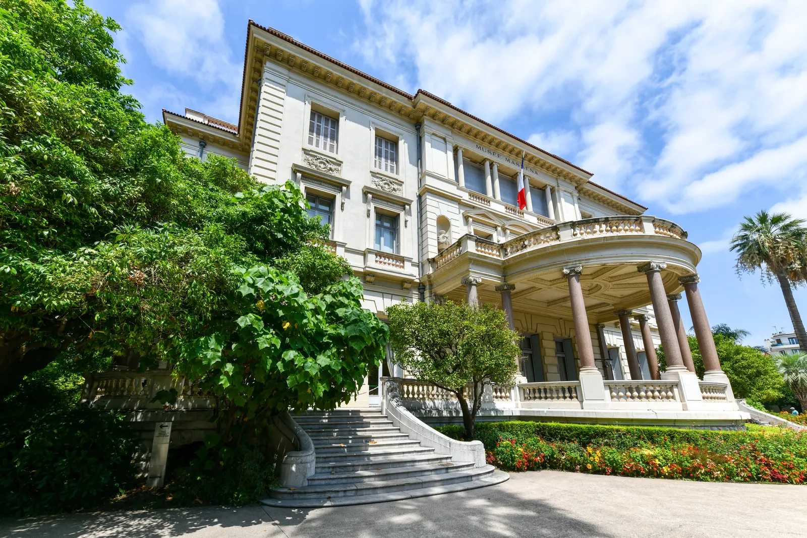
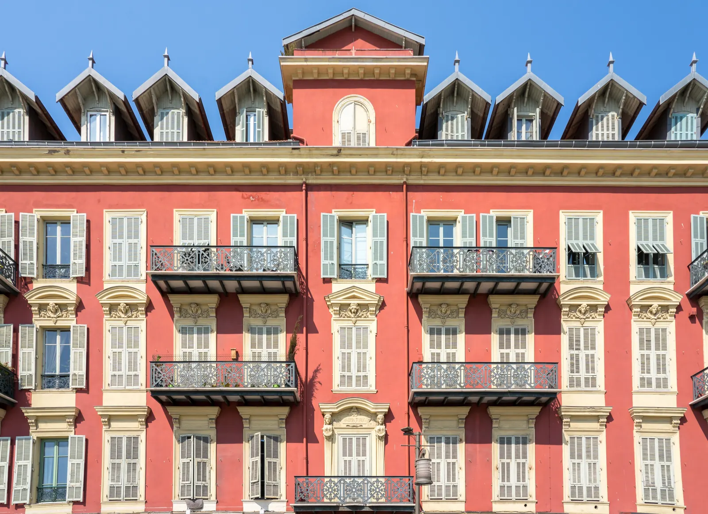
Se déplacer
Trois lignes de tramway relient le port, le centre, la gare, l'aéroport et les quartiers nord. L'aéroport Nice Côte d'Azur, deuxième de France, est à vingt minutes de la place Masséna en tram. La gare de Nice-Ville dessert Paris en un peu plus de cinq heures et demie, et le TER met Monaco à un quart d'heure, Cannes à une demi-heure.
Dans les collines et sur les hauteurs, la voiture reste nécessaire. Dans le centre, elle devient plutôt une contrainte : le stationnement est rare et payant presque partout.
Sources à confirmer : Lignes d'Azur, SNCF, Aéroports de la Côte d'Azur.
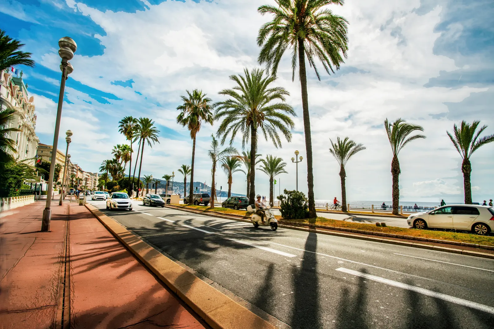
Avant de s'installer
Nice est l'une des grandes villes les plus chères de France hors Paris, et les écarts entre quartiers sont importants : le prix au mètre carré peut varier du simple au double entre un immeuble des quartiers nord et un appartement en front de mer. L'estimateur de Nice.immo, fondé sur les ventes réelles enregistrées par l'État, permet de se situer précisément avant de discuter.
Le parc de logements est ancien pour l'essentiel : immeubles Belle Époque, années 1930, copropriétés des années 1960 et 1970. L'état de l'immeuble, l'ascenseur, l'exposition et la vue comptent autant que l'adresse. Les résidences secondaires sont nombreuses dans les quartiers du bord de mer, ce qui rend certains immeubles très calmes hors saison.
Enfin, comme toute ville méditerranéenne, Nice connaît des épisodes de fortes pluies à l'automne et des étés de plus en plus chauds. Les plans de prévention des risques de la commune sont consultables sur Géorisques, et valent d'être lus pour une adresse en fond de vallon ou près du Paillon.
Sources à confirmer : DVF (ventes notariées), Géorisques, PPR de la commune de Nice.
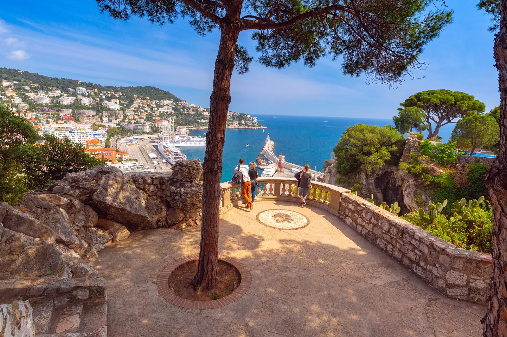
Une estimation fondée sur 22 118 ventes réelles à Nice depuis 2023. Sans inscription, sans email, sans téléphone.